妙蛙种子
十六进制 001十进制 001
草毒
关都御三家每种宝可梦都有一个隐藏内部编号，方便 ROM 识别它们喵。立绘来自百科 Spr 6x。
卡片上：十六进制／十进制是内部编号；彩色标签是属性；属性右边是出没地或获取途径。
野外道路依据 PokeAPI，对照各世代并优先《心金／魂银》（会标关都／城都／丰缘／神奥／合众／卡洛斯）。没有野外时补进化、御三家、化石复活、赠送、传说剧情或配信。
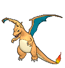
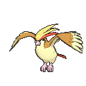
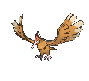
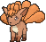
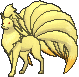
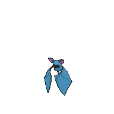
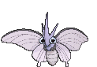
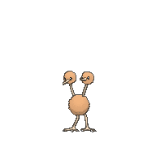
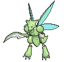
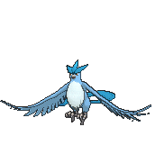
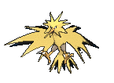
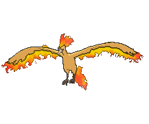
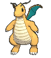
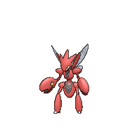
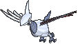
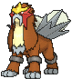
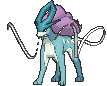
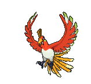
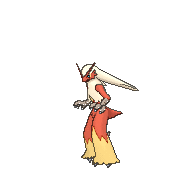
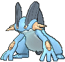
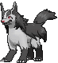
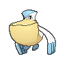
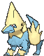
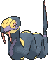
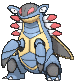
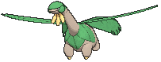
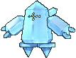
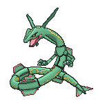
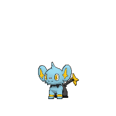
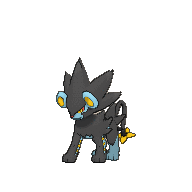
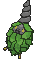
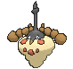
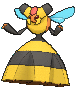
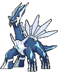
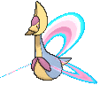
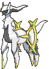
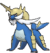
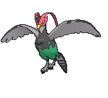
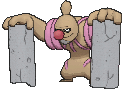
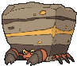
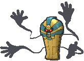
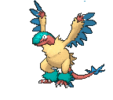
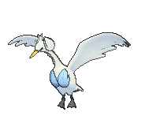
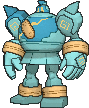
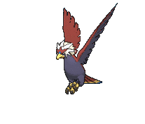
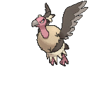
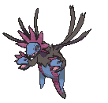
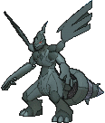
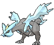
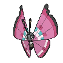